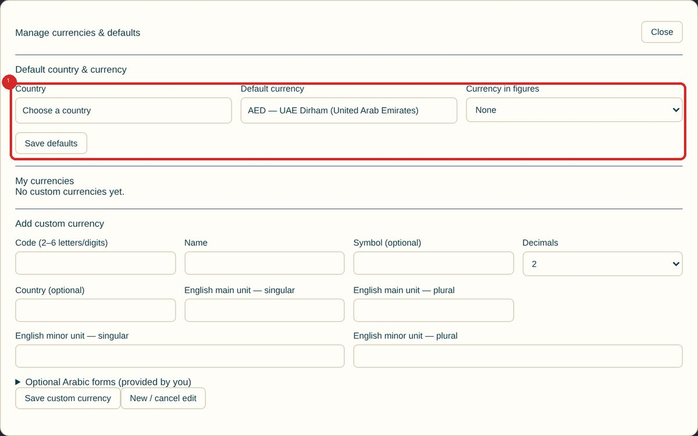
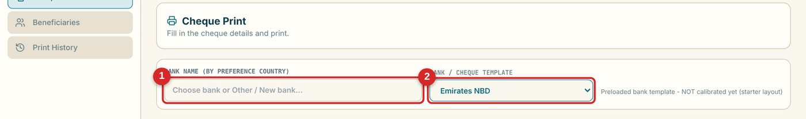
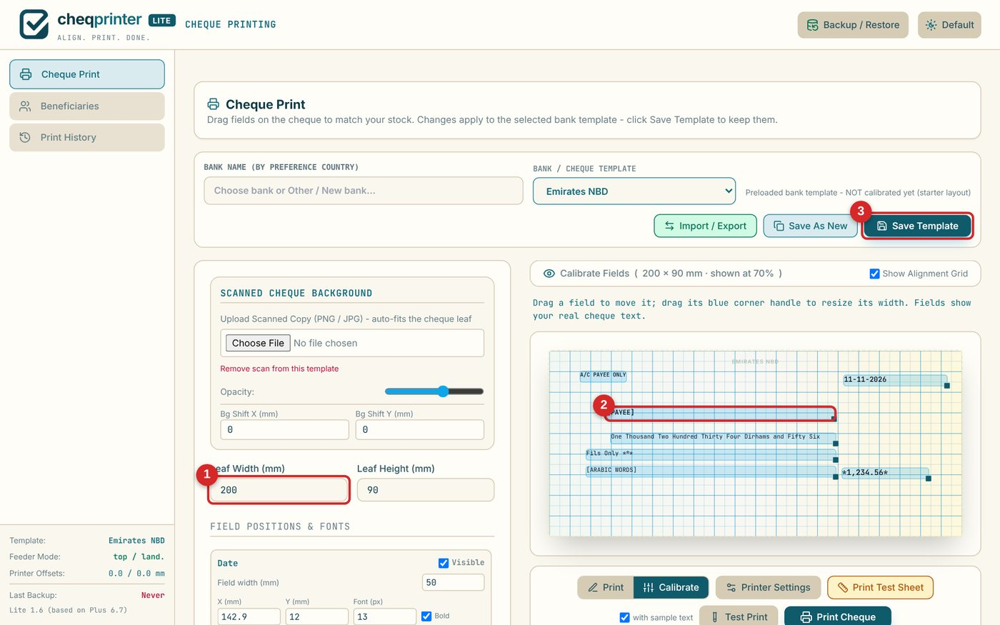
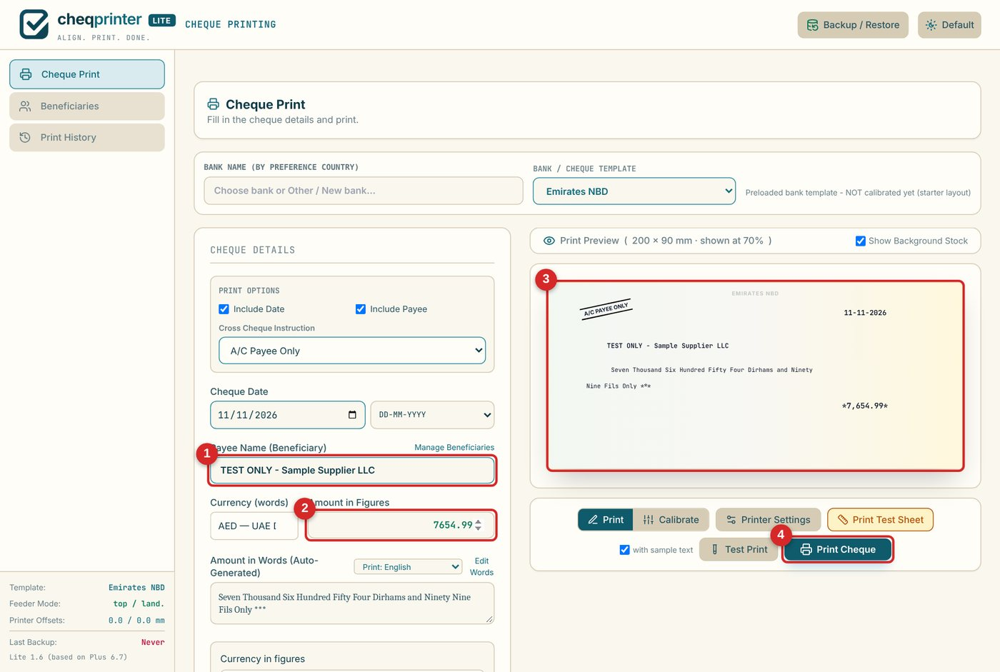
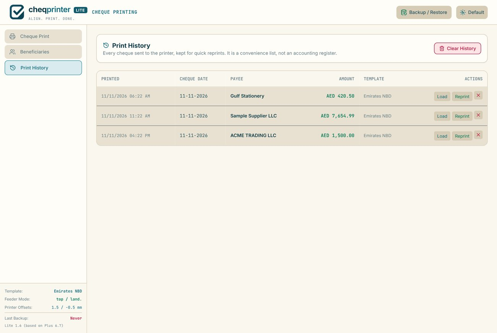

Print your first cheque: step by step
From download to a correctly aligned printed cheque, with a short video and screenshots of every step.
What you need: an A4 desktop printer (inkjet or laser), a few sheets of plain A4 paper, one real cheque leaf (a spare or one you can afford to test with), a ruler, and Chrome or Edge. The first set-up takes around 10 to 15 minutes. After that, printing a cheque takes seconds.
Download and open the app
Download CheQPrinter Lite (or Plus). It is one HTML file. Save it somewhere permanent, such as Documents, then open it with Chrome or Edge (right-click, Open with).
No internet is needed after the download, and nothing you type is sent anywhere. Bookmark the page, and always open it from the same place in the same browser, because your templates and history are stored in that browser.
Set your country and currency
Click Backup / Restore, then Manage currencies & defaults. Choose your Country and Default currency, then press Save defaults. Dozens of currencies are included, and you can add your own if yours is missing.

The amount in words is written in English or Arabic. You can always edit the words by hand if you need another language.
Choose your bank template
On the Cheque Print screen, type your bank in the first box, or pick a layout from the second. The app includes more than 80 built-in layouts, but they are only starting points. Cheque books of the same bank can differ, and every printer feeds paper a little differently. That is why the next steps matter.

If your bank is not listed, choose Other / New bank or a generic template. You will save your own calibrated version in step 6.
Print the test sheet on plain A4 paper
Click Print Test Sheet. In the browser print window, choose your printer and set the scale to 100% (Actual size), not "Fit to page". Print on plain A4 paper, not on a real cheque.
- Scale is 100% / Actual size
- The 100 mm bar at the bottom of the sheet measures exactly 100 mm with a ruler
- Paper is plain A4 (no real cheque yet)

If the 100 mm bar is not exactly 100 mm, fix the printer scaling first. Nothing else will line up until it is.
Hold the sheet against your real cheque
Lay the printed sheet over a real cheque and hold both up to a window or light. The red crosses show where each field will start. Note how far each cross is from where the text should start.
This is the only step that needs a real cheque in your hands. Take your time: a minute here saves wasted leaves later.
Calibrate and save the template
Click Calibrate. Enter your cheque's Leaf Width and Leaf Height in millimetres (measure with a ruler). Then drag each field to where it belongs. You can also drag a blue corner handle to change a field's width, or type exact positions below. Optional: upload a scan of your cheque to line up against it.

When it looks right, press Save Template. From now on this bank's template is calibrated. Use Save As New if you want to keep the original starter as well.
Save your printer position
If every field is shifted by the same amount, that is your printer, not the template. Open Printer Settings, nudge the position in 0.5 mm steps and save it as a named profile. The alignment and test-sheet guide explains this in detail.
Fill in the cheque and print
Switch to Print, enter the date, payee and amount. The amount in words is written for you. Check the preview, then press Print Cheque. Put the cheque in the printer's manual or bypass slot if it has one.

The app protects you from common mistakes. It warns if the template is not calibrated yet, if the words are too long for the line, if you edited the words by hand, and if you try to print the same cheque twice within 24 hours. After printing it asks Did the cheque print successfully? Press OK to record it in Print History.

Make a backup
Your data lives in your browser. Open Backup / Restore and download a backup file regularly. Keep a copy somewhere other than this computer. The same dialog shows how much browser storage you have used.
Always test before using real cheque leaves
Print on plain paper first and hold it against a real cheque. Banks set their own rules on printed cheques, so confirm with your bank. CheQPrinter is not affiliated with any bank.